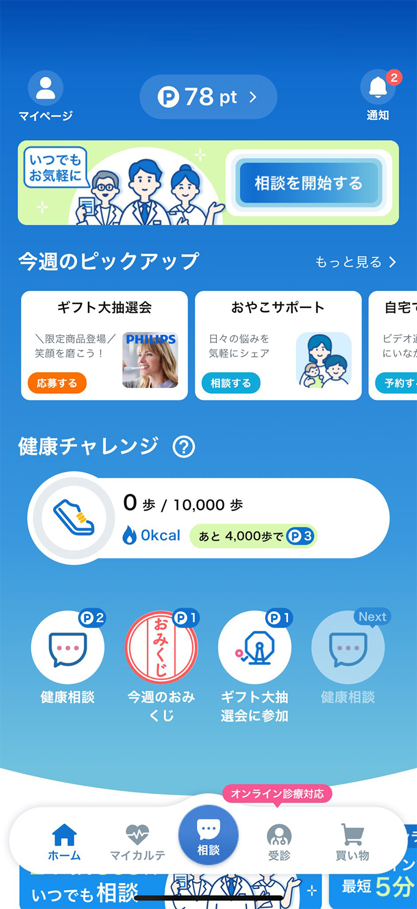
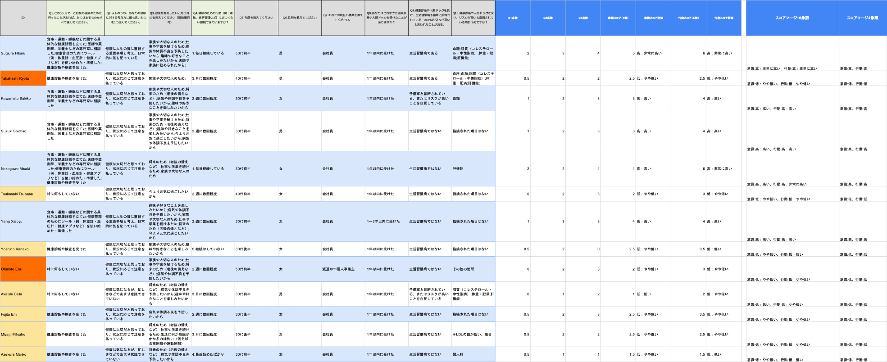
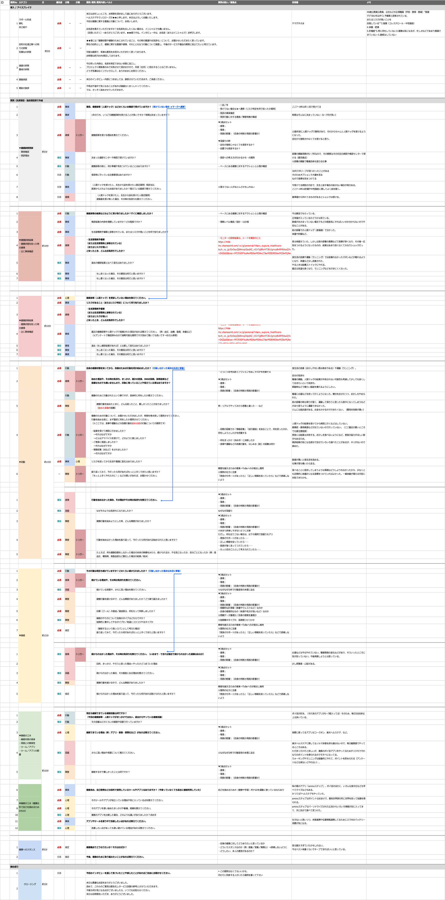
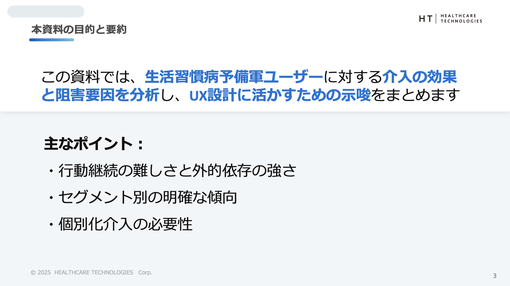
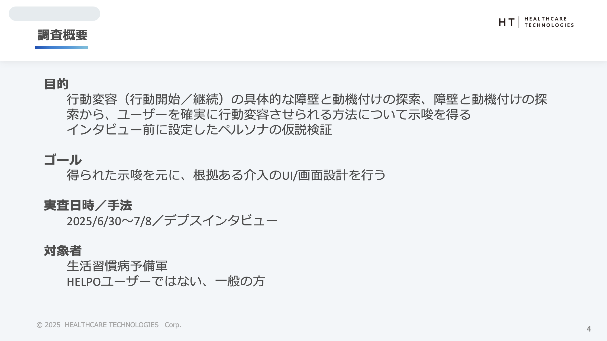
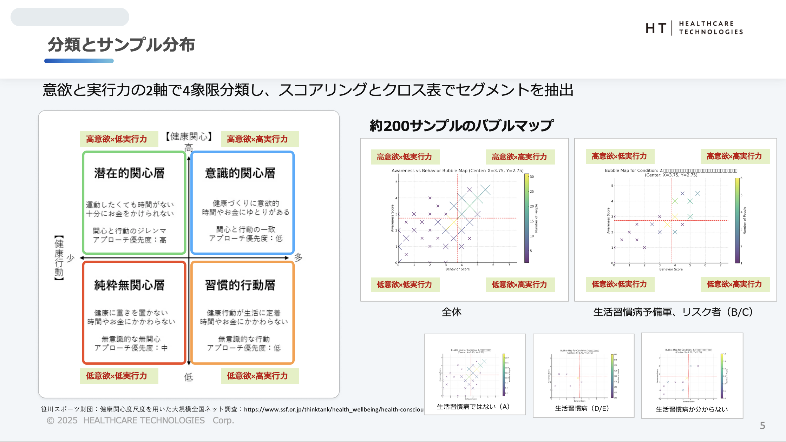
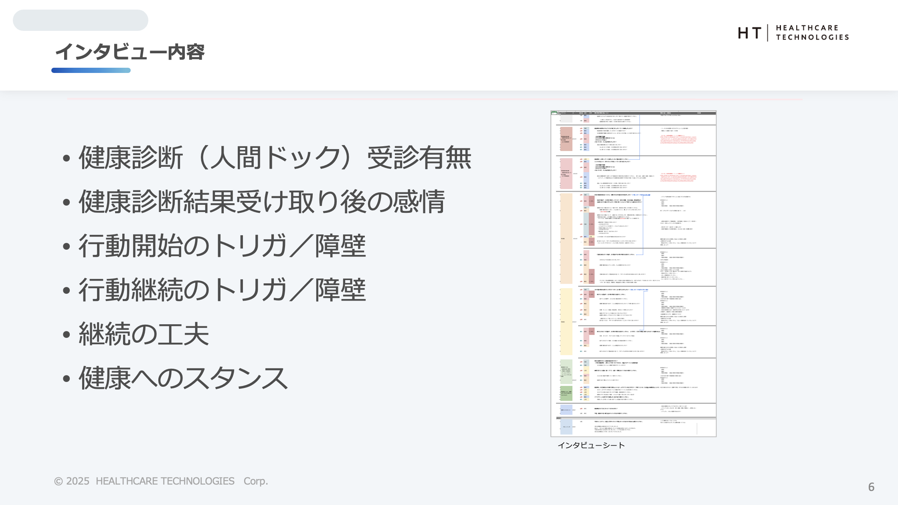

生活習慣病予備軍に対する介入施策。画一的なアドバイスではなく、ユーザーの心理フェーズに合わせた「ハイブリッド型UX」による継続率改善の提案。
24時間365日、医師・看護師・薬剤師などの医療専門チームにチャットで相談できるヘルスケアアプリ。
オンライン診療や処方薬の配送、歩数計などの健康管理機能も備えた「スマホ上の病院・薬局」のような総合プラットフォーム。

ユーザー調査報告書
インサイト・セグメント分析UX戦略提案書
インサイト・セグメント分析実装方針案
共通基盤・個別チューニング要件健康行動を開始しても「継続」が難しく、短期間で離脱してしまうユーザーが多いという課題があった。特に行動変容ステージにおける「維持期」への転換がボトルネックとなっていた。
デプスインタビュー分析の結果、ユーザーは一律ではなく、「意欲（Awareness）」と「実行力（Behavior）」の2軸で4つのセグメントに分類できることが分かりました。


高意欲層には「頑張れ」という励ましが逆効果（プレッシャー）になり、逆に低意欲層には「健康の重要性」を説いても響かないことが分かりました。セグメントごとに異なる「言葉」が必要です。




知識はあるがハードルを上げすぎて挫折。「三日坊主」に自己嫌悪を感じている。
継続できているが、記録が切れると一気にやる気を失うリスクがある。
健康リスクが自分ごと化されておらず、「面倒」「まだ大丈夫」と感じている。
会社の施策などで動いているが、意味を感じていないため自律性がない。
高意欲層には「頑張れ」という励ましが逆効果（プレッシャー）になり、逆に低意欲層には「健康の重要性」を説いても響かないことが分かりました。セグメントごとに異なる「言葉」が必要です。
実際の調査報告資料（抜粋）をご覧いただけます。
全ユーザー共通の「安心基盤」と、セグメント別の「可変体験」を組み合わせるハイブリッドUX戦略。
すべてのユーザーへ
タイプ別出し分け
本プロジェクトにおける具体的な実践内容とアウトプット
| Classification | リサーチ | リサーチ | リサーチ | デザイン | デザイン | デザイン | デザイン | デザイン | 進行管理 | 進行管理 | プロジェクト | プロジェクト | プロジェクト |
|---|---|---|---|---|---|---|---|---|---|---|---|---|---|
| Skill | ユーザー調査 | ユーザー分析／ モデリング |
ユーザー評価 | コンセプト定義 | 体験設計／ ユーザー要求仕様作成 |
プロダクトやサービスの 要求仕様作成 |
情報設計／ デザイン仕様作成 |
プロトタイプ作成 | 進行管理 | ワークショップ | ビジネス課題の特定 | プロジェクト設計 | プロジェクト運営 |
| Details |
スキル概要
手法/成果物例 調査設計書、リクルーティング、ユーザーインタビュー（デプスインタビュー）、エスノグラフィー、コンテクスチュアルインクワイアリー |
スキル概要
手法/成果物例 KA法／KJ法、上位下位関係分析、価値マップ、ペルソナ、カスタマージャーニーマップ（As-Is） |
スキル概要
手法/成果物例 手法：ユーザーテスト、コンセプト評価、価値検証、ユーザビリティテスト、実証実験 評価対象：サービスやアイデアのコンセプト、サービスやプロダクトの体験、サービスやプロダクトのユーザービリティ 成果物例：テスト設計、インタビューガイド、リクルーティング、評価レポート |
スキル概要
手法/成果物例 UXゴール、バリュープロポジションキャンバス、コンセプトシナリオ、1枚企画書、コンセプトシート、ビジネスモデルキャンバス |
スキル概要
手法/成果物例 カスタマージャーニーマップ(To-Be)、構造化シナリオ法、サービスブループリント、CVCA、アクティングアウト |
スキル概要
手法/成果物例 ユーザーストーリーマップ（特に機能面）、開発要件定義書、プロダクトバックログアイテム、プロモーションプラン |
スキル概要
手法/成果物例 コンセプトムービー、4コマシナリオ、アクティングアウト、ペーパープロトタイプ、モックアップ、ホットモック、データプロトタイプ、プレスリリース、ビジュアルプロトタイプ |
スキル概要
手法/成果物例 サイトマップ、コンテンツマップ、ナビゲーション設計、画面遷移図、ワイヤーフレーム、WEBサイトやアプリ等の画面デザイン、デザインシステム、UIガイドライン |
スキル概要
手法/成果物例 スケジュール表、タスクリスト、稼働リスト |
スキル概要
手法/成果物例 ワークショップ計画、KJ法やコンセプトアイデアや体験設計などのワークショップ |
スキル概要
手法/成果物例 案件の立ち上げ、提案書、顧客インタビュー、解決すべきビジネス課題 |
スキル概要
手法/成果物例 プロジェクト計画書（プロジェクトゴール／成果物／プロセス／アクティビティ等を含む）、チームのメンバー構成、社内外のアサイン調整 |
スキル概要
手法/成果物例 インセプションデッキ、修正されたプロジェクト計画書 |
| Status | |||||||||||||
| Rank | 3R | 3R | 3R | 3R | 3R | 3R | 3R | 3R | 3R | 3R | 3R | 3R |
本プロジェクトにおける職能要件の充足状況と根拠
| スキル名 | ランク | 評価理由・実績 |
|---|---|---|
| ユーザー調査 | R3 | 生活習慣病予備軍を対象としたデプスインタビュー（N=14）を設計・実施し、定性情報を収集しているため。 |
| ユーザー分析／モデリング | R3 | インタビュー結果を「意欲×実行力」の4象限マトリクスに構造化し、セグメントごとのインサイトを導出しているため。 |
| ユーザー評価 | 3R | Figmaプロトタイプを用いたユーザビリティテスト（N=5）を実施し、80%の肯定的な回答を得て改善につなげているため。 |
| スキル名 | ランク | 評価理由・実績 |
|---|---|---|
| コンセプト定義 | R3 | 「管理」から「許し（リカバリー）」へというUXコンセプトの転換（Pivot）を定義し、プロダクトの方向性を定めているため。 |
| 体験設計／ユーザー要求仕様作成 | R3 | 「Rest Day機能」や「ストリーク維持ロジック」など、ユーザーの心理的ハードルを下げる具体的な体験フローを設計しているため。 |
| プロダクトやサービスの要求仕様作成 | 3R | 「休息日は記録が途切れない」という具体的な機能仕様（ロジック）を策定しているため。 |
| 情報設計／デザイン仕様作成 | 3R | 画面遷移やUIデザイン（配色、レイアウト）を作成し、実装可能なレベルまで落とし込んでいるため。 |
| プロトタイプ作成 | 3R | Figmaを使用して、インタラクションを含む検証可能なプロトタイプを作成しているため。 |
| スキル名 | ランク | 評価理由・実績 |
|---|---|---|
| 進行管理 | R3 | 2ヶ月という短期間でのPoC実施に向け、WBSを作成してタスクを細分化。週次で進捗をモニタリングし、遅延リスクを早期に検知・解消することで納期を遵守したため。 |
| ワークショップ | ─ | ※ワークショップの設計やファシリテーションを行っていないため。 |
| スキル名 | ランク | 評価理由・実績 |
|---|---|---|
| ビジネス課題の特定 | R3 | 「7日後の継続率12%」という定量的なビジネス課題を特定し、改善目標を設定しているため。 |
| プロジェクト設計 | R3 | 「目的」「ゴール」「対象者（セグメント）」を明確に定義し、どのような手法で課題にアプローチするかという全体の調査設計（Design）が論理的に構築されているため。 |
| プロジェクト運営 | R3 | 設計した計画に基づき、14名の対象者へのインタビュー実査を完遂し、PoC開始までプロジェクトを推進させているため。 |